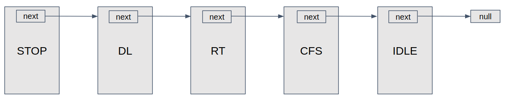

The Linux kernel scheduler (or task scheduler) is a complicated beast and a lot of effort goes into improving it during every kernel release cycle. The 5.4 kernel release will enable users to improve scheduling latency of their high-priority tasks by using SCHED_IDLE scheduling policy for the low priority tasks.
The scheduler consists of many scheduling classes, an extensible hierarchy of scheduling modules and each class may further encapsulate scheduling policies which are handled by the scheduler core in a policy independent way.
The scheduling classes are represented by the struct sched_class:
|
This structure mostly consists of function pointers or callbacks, like
enqueue_task(), dequeue_task(), etc, to class specific implementations
which are called by the scheduler core in a class independent manner. The
classes are kept in a singly linked list in descending order of their
priorities; the HEAD node points to the stop scheduling class which has the
highest priority in the scheduler and the last node in the list is the idle
class which has the lowest priority.

Figure 1. Singly linked list managing scheduling classes
The kernel calls schedule() whenever it needs to pick a new task for the
current cpu; which further calls pick_next_task() to find the next task that
should run on this cpu. pick_next_task() traverses the list of scheduling
classes, with the help of for_each_class() macro, to find the highest priority
scheduling class that has a task available to run. Once a task is found
successfully it is returned to the caller, which can then run it. There should
always be a task available to run in the idle class, which will run only if
there is nothing else for the scheduler to do and that task is called as the
idle thread which puts the cpus in various idle states.
|
The scheduling classes and policies managed by the Linux kernel scheduler are:
|
The scheduling classes are mentioned here in decreasing order of their
priorities; stop class has the highest priority and idle class has the
lowest.
The Stop scheduling class is a special class which is used for the internal
working of the kernel and so doesn’t implement any scheduling policies and no
user task ever gets scheduled on it. The stop class is rather a mechanism to
stop running everything else and run a specific function on a cpu. As this
is the highest priority class, it can preempt everything else and nothing ever
preempts it. Since it is used to stop another cpu to run a specific function, it
is only available on SMP systems. This creates a kernel thread (or kthread) per
cpu which is named migration/N, where N is the cpu number. This class is used
by task migration, cpu hotplug, RCU, ftrace, clockevents, etc in the kernel.
The Deadline scheduling class comes after the stop class and is the class
for the highest priority user tasks. It implements the SCHED_DEADLINE
scheduling policy with help of red-black tree which is a self balancing data
structure. This class is used for tasks with hard worst case deadlines, like
video encoding and decoding. A request for changing scheduling policy of a task
to SCHED_DEADLINE can be rejected by the deadline class if it can’t
guarantee enough cpu time for a new request, as all of the cpu time is used for
other deadline tasks. The tasks are run on a cpu based on their deadlines, hence
a task with the earliest deadline will run first.
The POSIX Realtime (aka RT) scheduling class comes after deadline class
and is used for short latency sensitive tasks, like IRQ threads. This is a fixed
priority class and it services a higher priority task before a lower priority
task. This implements two scheduling policies, SCHED_FIFO and SCHED_RR. In
SCHED_FIFO (or first in first out), a tasks runs until it leaves the cpu by
itself, either because it is waiting for a resource or it has completed its
execution. In SCHED_RR (or round-robin), a task will run for the maximum
quantum of time (also called as time slice), if the task doesn’t block before
the end of its time slice, the scheduler will put it at the end of the
round-robin queue of the tasks with the same priority and select the next task
to run. Both the policies are implemented using linked lists here. The
priorities of the tasks in RT class range from 0 (highest) to 99 (lowest).
The CFS scheduling class hosts most of the user tasks and it implements three
scheduling policies, SCHED_NORMAL, SCHED_BATCH and SCHED_IDLE. A task in
any of these policies get a chance to run only if there are no tasks enqueued on
the realtime or deadline class. The policies in CFS are implemented using
the red-black trees, which use virtual runtime (aka vruntime) to balance
themselves for this class. Vruntime is the amount of time a task was able
to run, and a task with the smallest vruntime gets a chance to run next. The
priority of a task is calculated by adding 120 to its nice value, which ranges
from -20 to +19; higher the nice value, lower the priority. The priority of the
task is used to set the weight of the task, which in turn affects the vruntime
of the task; lower the nice value, higher the priority, higher will be the
weight, and slower will the vruntime increase and more will the task run. The
SCHED_NORMAL policy is used for most of the tasks that run in a Linux
environment, like the shell. The SCHED_BATCH policy is used for batch
processing of the non-interactive tasks, where the tasks should run
uninterrupted for a sufficient amount of time and hence they are normally
scheduled only after finishing the SCHED_NORMAL activity. The SCHED_IDLE
policy is designed for the lowest priority tasks in the system and will get a
chance to run only if there is nothing else to run. The priority of these tasks
is even lower than the tasks with nice value of +19. This policy isn’t widely
used right now and efforts are being made to improve its support, so people
start using it in their solutions and that was the motivation of this article as
well. We will come back to that in a bit.
Last but not the least is the Idle scheduling class (don’t confuse it with the
SCHED_IDLE scheduling policy). This is the lowest priority scheduling class
and similar to the stop class, this doesn’t manage any user task and so
doesn’t implement a policy. It only keep a per-cpu kthread which is named
swapper/N; where N is the cpu number. These kthreads are also called as the
idle-threads. These are responsible for saving power by putting the cpus in deep
idle states when there is nothing else to run on them.
When a newly wakeup task is available to run, the scheduler core finds a target runqueue (i.e. the cpu to run it on) by calling the →select_task_rq() callback for the respective scheduling class. This returns the cpu number where the task should be enqueued. Once the task is enqueued on that cpu by the scheduler core, it checks if the newly enqueued task shall preempt the currently running task on that CPU by calling the →check_preempt_curr() callback.
For the CFS scheduler, the SCHED_IDLE policy was treated specially here in the
→check_preempt_curr() callback, where a currently running SCHED_IDLE task
gets immediately preempted by a SCHED_NORMAL or SCHED_BATCH task. It makes
sense to have this behavior as the SCHED_IDLE policy has the lowest priority,
but the problem was that many times the tasks were not getting queued on such
cpus (which are running SCHED_IDLE tasks) at all because the scheduler was not
treating such cpus differently in →select_task_rq() itself.
The 5.4 kernel release contains a
patchset
which makes necessary changes to →select_task_rq() to allow non SCHED_IDLE
tasks to get queued on cpus running only SCHED_IDLE tasks.
Last updated 2019-10-23 09:15:15 IST